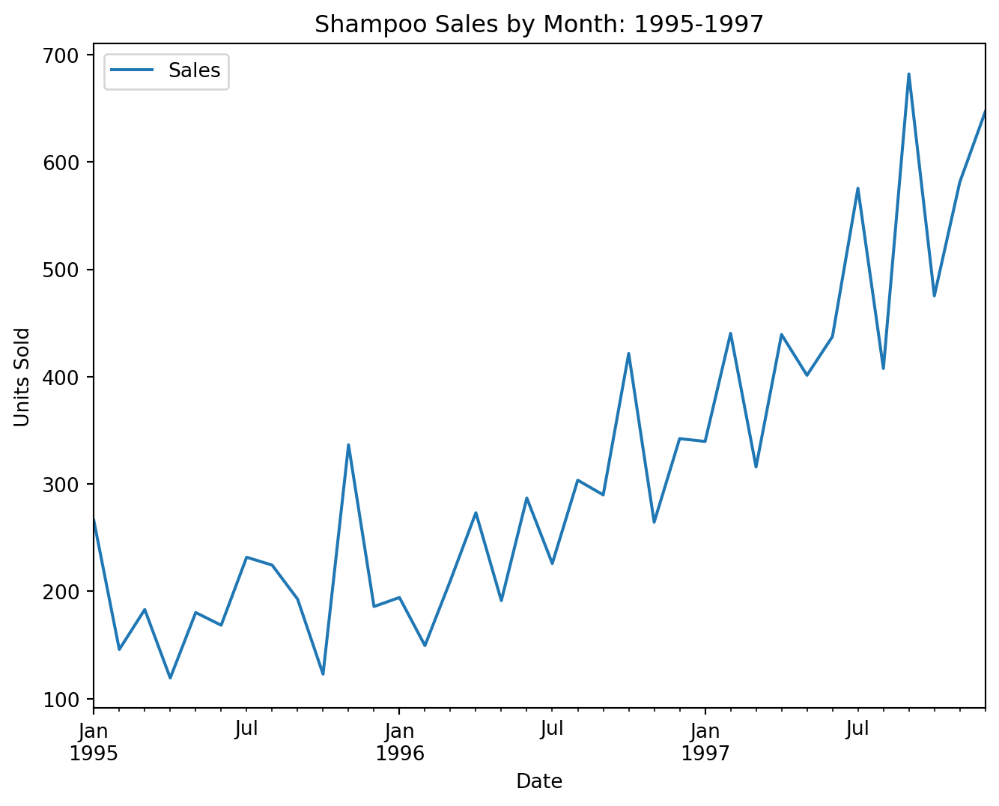
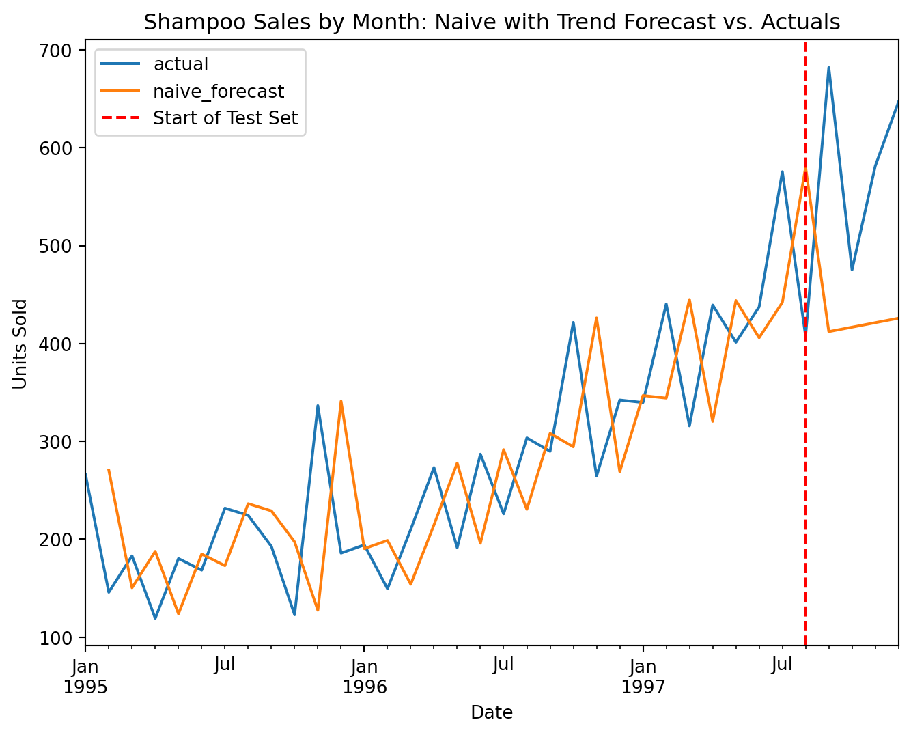

# common imports
import numpy as np
import pandas as pd
import matplotlib.pyplot as plt
# load the shampoo sales time series dataset
shampoo = pd.read_csv('shampoo_sales.csv')
# The following code creates the datetime index.
# We are not told the exact years this data was collected from, so 1995-1997 will be used.
shampoo['Year'] = pd.Series([
1995, 1995, 1995, 1995, 1995, 1995, 1995, 1995, 1995, 1995, 1995, 1995,
1996, 1996, 1996, 1996, 1996, 1996, 1996, 1996, 1996, 1996, 1996, 1996,
1997, 1997, 1997, 1997, 1997, 1997, 1997, 1997, 1997, 1997, 1997, 1997
])
shampoo['Date'] = shampoo['Year'].astype('str') + '-' + shampoo['Month'].str[-2:] + '-01'
shampoo['Date'] = pd.to_datetime(shampoo['Date'])
shampoo = shampoo.set_index('Date')
shampoo.index.freq = 'MS'
shampoo = shampoo.drop(columns=['Month', 'Year'])Naive Forecasts with Trend
Forecasting
Python
Baseline Models
Time Series Modeling
Naive Forecasts
Learn how to include a trend (drift) in your naive forecasts
In past articles, we have covered simple naive forecasting and seasonal naive forecasting. The final type of naive forecasting method we will cover is a naive forecast with drift. This allows us to account for trend in our time series.
This article will first explore the key concepts behind a naive forecast with drift. We will then walk through a simple example demonstrating how to build this type of forecast in Python.
Why a Simple Naive Forecast is Often Not Enough
As a reminder, a simple naive forecast model uses the most recent past value in your time series as the next predicted value. In other words, the value at t becomes the forecast for t+1. One limitation of this method is that it does not capture any trend in your time series.
A trend is a long-term increase or decrease in your time series. For more information about trend and other time series structures, check out this article. If your data is increasing or decreasing over time, that will not be accounted for in a simple naive forecast.
If you are only forecasting one or two steps into the future, this may not be a big problem. However, the stronger the trend and the further in the future you want to forecast out, the more your simple naive forecast will deviate from the actual results.
How To Calculate Drift
The term “drift” refers to the constant increment we add to our forecast to account for an estimated trend. There are different ways to calculate this value.
One approach is to simply find the difference between your two most recent observations. This method has the advantage of capturing the most recent change in your time series. However, if the last two observations are not representative of the underlying trend in your data, this may not be a good way to estimate future changes.
Another approach is to find the difference between the first and last observations in your dataset and divide this value by the total number of observations minus one. This gives us the average change across our time series.
This is the conventional approach used in a naive forecast with drift. Its advantage is that it captures the average change across the entire time series rather than relying on just the most recent observations. However, if the trend has changed recently, it may not fully capture that change in future forecasts.
How to Include Drift in a Naive Forecast
Regardless of how you calculate the drift value, the way you incorporate it into your forecast is the same.
Without seasonality, your forecast for the next time step becomes the previous observed value plus the drift value. As you move further into the future, you continue adding the drift value at each successive step.
This allows the drift to accumulate over time, which is what makes this method capable of approximating a trend into the future.
If you are adding drift to a seasonal naive forecast, the calculation requires accounting for both the seasonal pattern and the accumulated drift. We will provide an example of this in a future article. For now, however, we will focus on a naive forecast with drift that does not include seasonality.
A Simple Example in Python
To illustrate a naive forecast with drift, we will use a common time series dataset that captures three years of monthly shampoo sales. In the following code cell, we will load the libraries we need and prepare our data for use.
Now, we will perform a simple train-test split to set aside a portion of our dataset for testing.
from sklearn.model_selection import train_test_split
y_train, y_test = train_test_split(shampoo, shuffle=False, test_size=4) #Shuffle parameter is set to Fase since we are working with a time seriesLet’s take a quick look at our data using a simple line plot. In a real-world project, you would do much more during the exploratory data analysis stage. However, for our purposes, this will help us identify the trend structure within the data.
shampoo.plot(figsize=(8,6))
plt.title('Shampoo Sales by Month: 1995-1997')
plt.ylabel('Units Sold')
plt.show();
There is no clear seasonality in this dataset. However, our data displays a strong upward trend. Shampoo sales steadily increased during the years the data was collected.
Now we are ready to create our fitted values for the training set. We will use pandas’ .shift() method to shift our values forward by one row. Then, we will use the .dropna() method to remove the resulting null value created by this shift.
shampoo_naive_fitted = y_train.shift(1)
shampoo_naive_fitted = shampoo_naive_fitted.dropna()Next, we calculate our drift value. In this example, we will calculate it by subtracting the first observation from the last observation in our training set and dividing by the number of observations minus one.
Pandas’ .squeeze() method turns the resulting single-value Series into a scalar value. More information about this method can be found in the pandas documentation here.
shampoo_naive_drift = ((y_train.iloc[-1] - y_train.iloc[0]) / (len(y_train) - 1)).squeeze()
print(shampoo_naive_drift)4.5677419354838715Our drift value is approximately 4.6. This means that, on average, our data has increased by around 4.6 units of sales each month across the training period.
We will now add this drift value to our fitted values to create a naive forecast with drift.
# Add drift to fitted values
shampoo_naive_fitted_drift = shampoo_naive_fitted + shampoo_naive_drift
#Rename columns to make future visualization easier
shampoo_naive_fitted_drift = shampoo_naive_fitted_drift.rename(columns={'Sales': 'naive_forecast'})Okay, now we are ready to forecast into our test period. We will add the drift value at each successive step, allowing it to accumulate as we move further into the future.
We will start with the last actual observation in our training set and calculate the forecast for each step in the test period.
# Capture the final actual training observation as our starting point
last_observation = y_train.iloc[-1].squeeze()
# Create a forecast extending through the test period
shampoo_naive_forecast_drift = pd.DataFrame(
index=y_test.index
)
# Create a step column to track the forecast horizon
shampoo_naive_forecast_drift['step'] = np.arange(
1, len(y_test) + 1
)
# Calculate the forecast by adding the accumulated drift
shampoo_naive_forecast_drift['naive_forecast'] = (
last_observation +
shampoo_naive_forecast_drift['step'] * shampoo_naive_drift
)
# Drop the step column since it is no longer needed
shampoo_naive_forecast_drift = shampoo_naive_forecast_drift.drop(
columns=['step']
)Ok, we have successfully projected our naive model with drift through the test period. Let’s now take a moment to examine how well our model performs using a simple visualization.
pd.concat([shampoo, pd.concat([shampoo_naive_fitted_drift, shampoo_naive_forecast_drift], axis=0)], axis=1).rename(columns={'Sales':'actual'}).plot(figsize=(8, 6))
plt.axvline(x=y_train.index[-1], color='red', linestyle='--', label='Start of Test Set')
plt.title('Shampoo Sales by Month: Naive with Trend Forecast vs. Actuals')
plt.ylabel('Units Sold')
plt.legend()
plt.show();
Based on this visualization, our naive model with drift did a good job of capturing the upward trend in our time series as it extended into the test period.
A simple naive model, by comparison, would have produced a flat forecast line and increasingly underpredicted shampoo sales.
We should keep in mind that this is a small dataset, and the test set in particular is very small. Our model may not perform as well as it extends further into the future.
Conclusion
To sum up, by calculating a drift term and adding it at each successive step of a simple naive forecast, we can approximate a trend in our time series. This can be accomplished fairly easily in Python.
This type of model is easy to understand and not computationally intensive. While it may be suitable as a production model in certain situations, it is more commonly used as a baseline model against which we can compare more advanced forecasting methods.
One important limitation to remember is that a naive forecast with drift assumes the average rate of change will remain relatively consistent into the future. If the underlying trend changes, the model may not perform as well.
In a future article, we will look at how to combine both seasonality and trend in the same naive forecast.